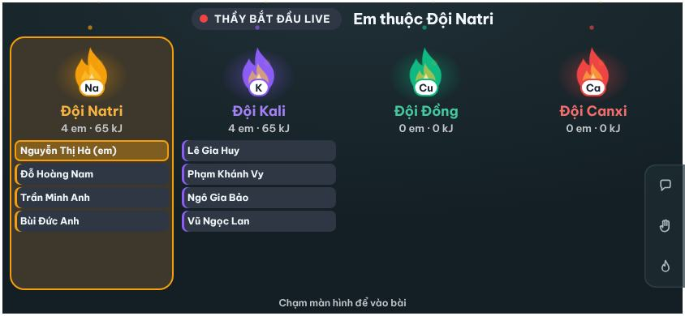
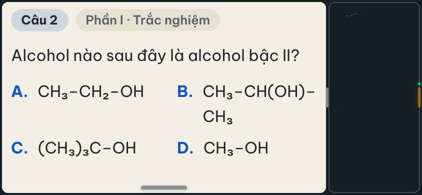
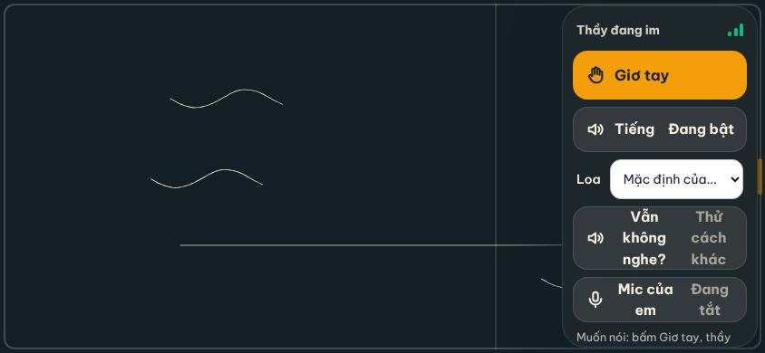
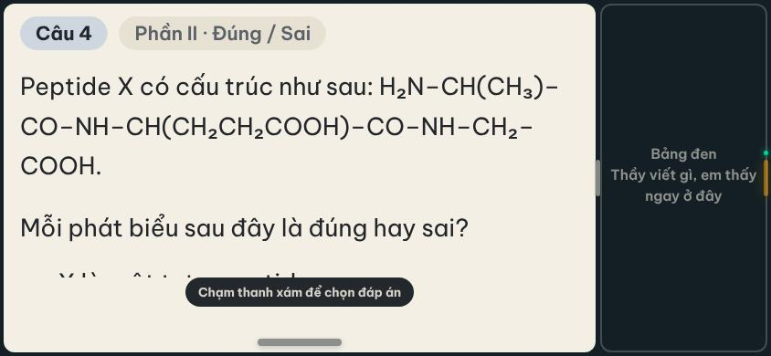
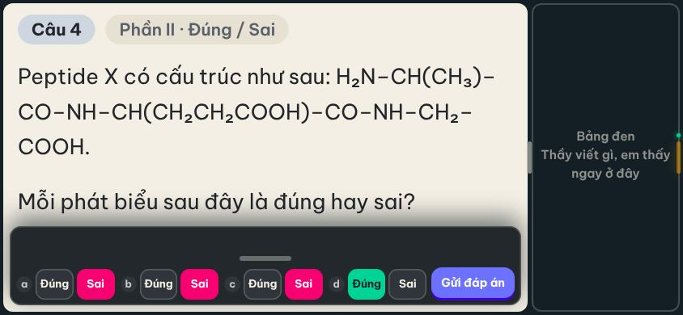
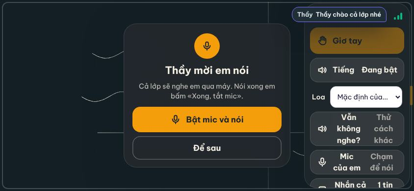

Làm theo 6 bước dưới đây. Dùng điện thoại, máy tính bảng hay máy tính đều được — có tai nghe thì cắm sẵn.
Mở app học của lớp như mọi ngày (bằng Chrome hoặc Safari) rồi đăng nhập tài khoản của em.
Tới giờ, ở trang chủ có thẻ màu hồng «Thầy đang mở phòng chờ» hoặc «Thầy đang live». Em bấm Tham gia.
Đang làm bài thi thì nộp bài xong mới vào live được.
Màn live hiện theo chiều ngang. Điện thoại: em xoay ngang máy, cầm bên nào cũng được. Thầy chưa bắt đầu thì em ở phòng chờ, chơi trò Sinh Tồn trong lúc đợi.

Đề bài bên trái, bảng thầy viết bên phải. Kéo vạch ở giữa để đề to hay nhỏ tuỳ em.
Không nghe thấy thầy? Chạm thanh vàng ở mép phải rồi bấm «Tiếng»; vẫn chưa nghe thì bấm «Vẫn không nghe?».


Thầy chiếu câu: chạm thanh xám dưới đề → chọn đáp án → bấm Gửi. Không chạm gì thì bảng chọn tự thu lại, lựa chọn của em vẫn giữ.


Chạm thanh vàng → «Giơ tay» để xin nói, hoặc «Nhắn cả lớp» để gõ tin nhắn.
Thầy mời em nói: bấm Bật mic và nói. Máy hỏi quyền dùng mic thì bấm Cho phép. Nói xong em tắt mic.

Lớp Hoá · thầy Đỗ Đại Học